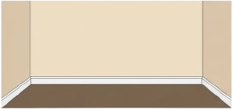
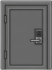

제한 시간은 단 30초. 준비가 되면 시작 버튼을 누르세요.
다이얼로 투입할 토큰 수를 맞추고 '넣기'를 누르세요.
철컥! 문이 활짝 열렸습니다.
토큰을 1개 소모하여 생존시간을 2초 늘릴 수 있습니다.
• 기계 : 1번부터 8번까지 시계 방향으로 누르면 토큰 1개를 얻습니다.
• 시간 연장 : 토큰 1개로 산소 시간을 2초 늘릴 수 있습니다.
• 상자 : 시간이 다 되어 쓰러져도 모아둔 토큰은 상자에 보존됩니다.
• 문 : 방에는 두 개의 문이 있습니다. 하나의 문은 토큰을 요구하며, 다른 문은 4자리 암호(8426)가 필요합니다.
암호를 입력하세요.
빈 방의 버튼이 눌렸습니다. 창을 닫고 계속해서 방을 탐색할 수 있습니다.
설정 A(5개)와 설정 B(10개) 플레이 기록을 확인하고 복사할 수 있습니다.